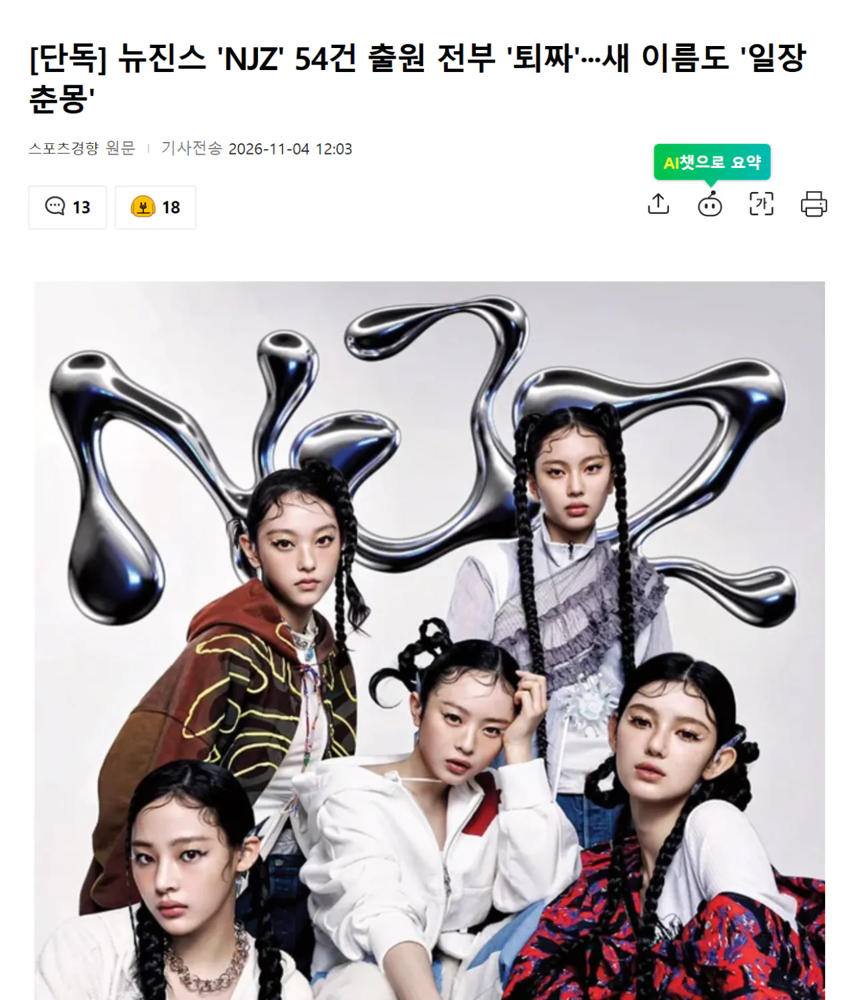

https://news.nate.com/view/20261104n16482
그룹 뉴진스 멤버들의 한 때 염원이었던 ‘NJZ’가 프로젝트가 모두 좌절됐다. 상표등록 출원 54건 모두 거절되면서다.
민지·하니·다니엘·해린·혜인이 공동으로 낸 NJZ 관련 상표 등록 54건 모두 등록이 ‘거절결정(일반)으로 결정된 것으로 4일 확인됐다.
지난 10월 4일 14건, 10월 14일 20건, 11월 3일 20건이 상표 등록이 모두 거절되면서 NJZ와 관련된 모든 등록은 수포로 돌아갔다
그래서 뉴진스 4인조 언제나옴?


이제 그룹 이름이 일장춘몽이야??